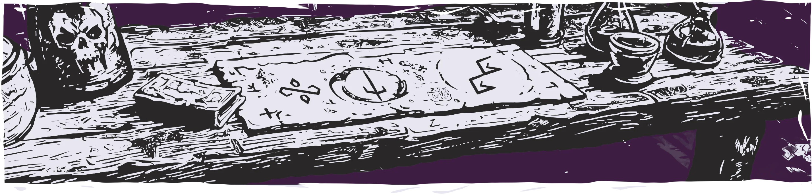
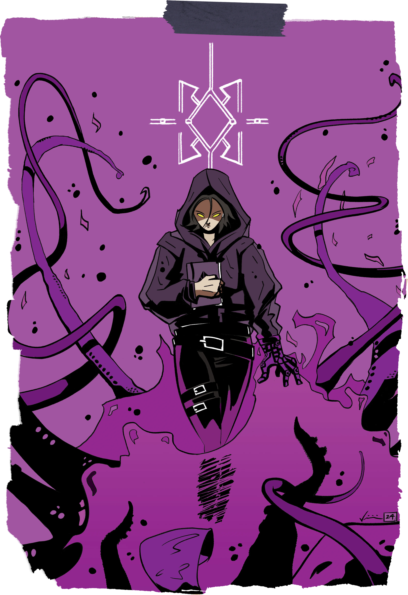
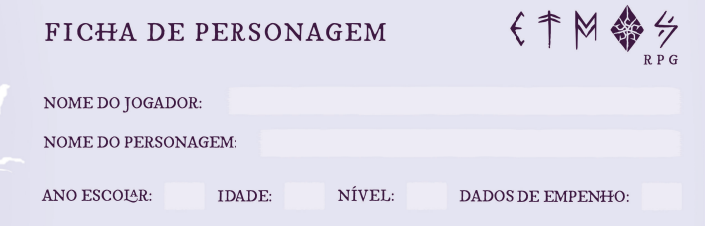
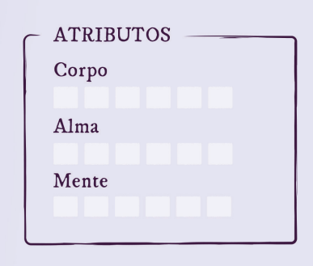
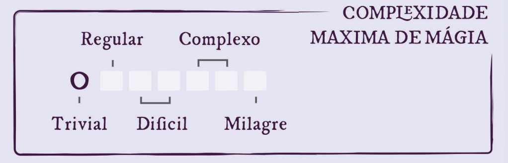
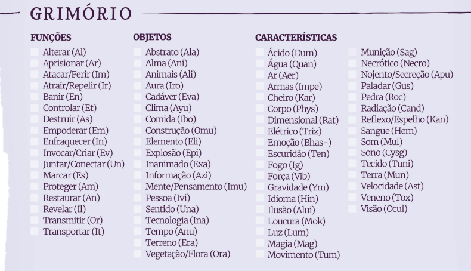

ETMOS RPG é um sistema de extrema simplicidade técnica mas grandes conceitos narrativos e estimulantes à criatividade. Na primeira parte da ficha temos um cabeçalho simples onde descrevemos: Nome de jogador e de personagem, e o resto (ano escolar, idade e nível) Normalmente é definido pelo mestre. Os dados de empenho é um sistema único e recompensador, sempre que um personagem recebe um destes pontos ele pode gastar para adicionar +1d6 em suas rolagens.


Os atributos de ETMOS, assim como o sistema e geral, também são extremamente simplificados, sendo resumidos a Corpo representando força físca e resistência, Alma sendo poder mágico e parte da Mana e Mente sendo os conhecimentos e proeficiências do personagem., refletindo as trê principais característiscas de cada personagem. Em ETMOS, as rolagens são feitas rolando 2 dados de 6 lados e somando os resultados ao atributo da rolagem.
Os níveis de complexidade são simples de compreender, tendo títulos intuitivos na ficha. Os níveis são denominados: Trivial, uma magia simples e superficial, sem grandes esforçoes e praticamente sem gasto de Mana, não acumulando nenhum ponto de Estresse; Regular, algo mais requintado e bem pensado, podendo causar efeitos ou danos significativos, mas ainda assim rudimentar, acumulando apenas 1 ponto de Estesse; Difícil, magias invocadas apenas por magos estremamente estudiosos e normalmente próximos de se formar na escola de magia; Complexo já demonstra um nível de poder bastante incomum, sendo permitido apenas para uso de magos em atuação como buscadores (polícia mágica do sistema); E, por fim, Milagre, um nível de poder que normalmente pode acabar sendo um incômodo para muitos mestres, tendo que ter sua própria regra a depender da mesa.
Assim como os outros dois atributos, Mente também é resposável por um cálculo dentro da ficha. Entretanto, de acordo com a proposta do sistema, este é um dos mais importantes. ETMOS possui um sistema de conjuração focado na criatividade do invocador, mas isso não é algo livre e sem limitações. Sempre que um mago declarar uma magia, o mestre ou um acordo feito junto aos membros da mesa, definirá a complexidade da magia, logo, quantos pontos de estresse ela consomirá. O nível de complexidade mágica máxima de um mago estará sempre atrelado a quantidade de pontos que ele possui no Atributo MENTE.
Como citado, os atributos estão ligados a características muito importantes da criação do personagem, moldando alguns dos únicos cálculos que temos nas fichas. A Vida do personagem é pré-definida pelo valor 4 e recebe mais 1 ponto para cada 2 no atributo de CORPO; Já o Estresse que pode ser entendido como a Mana do jogo também tem um cálculo semelhante, mas sem a divisão, sendo definido por 4 + ALMA. E a Mente serve para algo ainda mais importante.

A magia em ETMOS, como dito anteriormente, é definida quase completamente pela criatividade do conjurador. Para explicar sua funcionalidade nós trabalhamos com o conceito de PARTÍCULAS. Existem três categorias de Partícula: Função, Objeto e Característica. Toda magia obrigatoriamente possui uma Função e um Objeto/Alvo, a Característica é apenas um complemento que pode não ser necessário em algumas conjurações. Invocar uma magia é como montar uma frase simples, por exemplo Ev(Invocar) Eli(Elemento) Quan(Água) EVELI QUAN, Podemos traduzir para Invocar Elemento Água, mas isso por si só não faz nada, a magia acontece através da intenção do invocador. Podendo servir para encher um copo d'água, sendo uma magia tivial; Invocar chuva em determinada região, sendo uma magia regular ou difícil; Ou talvez um jato de água pressurizado para atingir um alvo.
